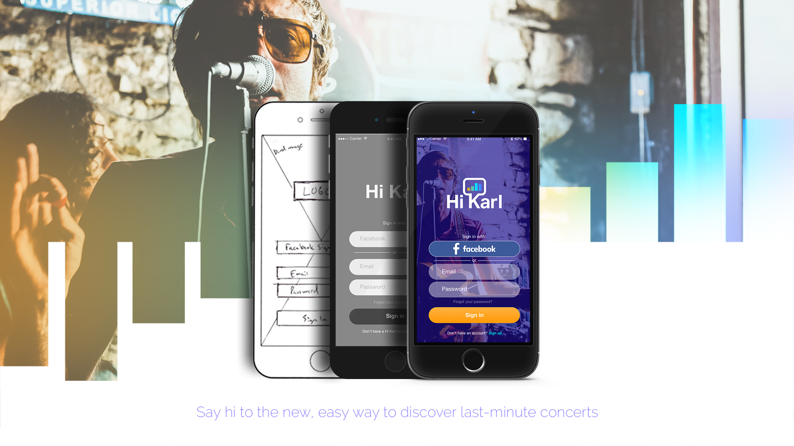
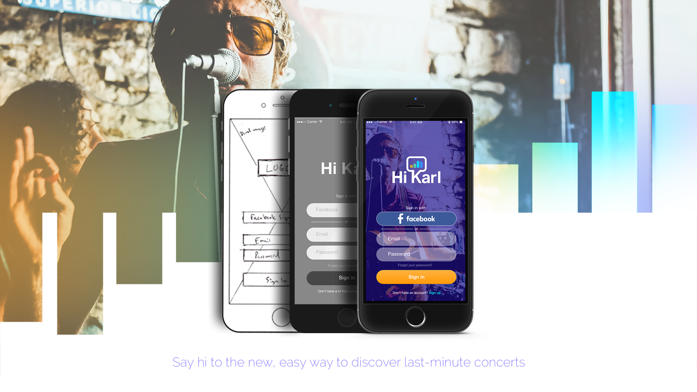

Concerts make memories, Karl just makes them easier
a UX design story by Adrian Michael Dickey
- User Response
I could not agree more with this statement from my research. I mean who doesn't feel the need for music in their life? And to be in front of live music? A concert can truly be a healing moment and if people need one in a last minute scenario there needs to be an easy way to help find their cure. A few months ago I found myself in need of some musical healing and I wanted to find a concert cure right away. This is exactly what drew me in to this project with Hi Karl. I want to tell you the story all about my four month journey in a descriptive case study to show you the entire process from the very beginning phases all the way to the final experience.
Hi Karl is a NYC-based startup company specializing in live music and event discovery in the entertainment industry. Its founders, Florian Doumenc (CEO) and Rhy Walsh-Tindall (Engineer), always found it hard to find really great concerts, and especially in a last minute scenario. In addition to their problem, they discovered that in today’s industry about 30% of all event tickets are never even sold, resulting in an estimated $15B loss in revenues for artists and promoters. Hi Karl was created to bridge this gap between its users and customers by offering promoters a platform to push and promote their events to the users who are seeking to go out and find last minute concerts. The ultimate goal of Hi Karl is to become the number one last minute live music and event discovery service. Karl is an AI-powered personal assistant that aggregates all events in an area, and by utilizing its target users listening habits and streaming data/analytics, Karl offers new ease and efficiency in last minute event discovery.
Hi Karl is available live across three current platforms:

In the diverse world of concert discovery services, I wanted to be able to identify the right problem to solve and help my client determine and understand what it is they want to accomplish. In order to help better define my vision for this case study, I needed to define my specific role. Early in the discovery phase I set out to construct the Hi Karl problem statement and after thorough research and analysis displayed in this case study, I came up with the following:
To create an attractive, enjoyable, and intuitive design solution with user-engaging features that helps millenial concertgoers discover new and appealing last-minute concerts, while also serving as an effective opportunity for venue owners to promote their events in order to sell unsold tickets.
My role in this project was to improve the user experience of Hi Karl and to also redesign and rebrand Hi Karl. Based on my research from the case study I have chosen not to focus on the Facebook Messenger chat bot service, Alexa service, or the current web platform, but instead focus on designing Hi Karl as a free stand alone mobile app. I focused on the visual design, user experience, and functionality of this new platform from the beginning login screen through the search and results processes. I did not examine the ticket purchase aspect but solely on the UI/UX of the process of users finding a last minute concert using the new mobile application. I am responsible for all user and market research, the redesign and rebrand, UI/UX strategy, the visual design through numerous wireframing and prototyping, usability testing, and the delivery of a new intuitive solution platform for Hi Karl.
If I was going to make informative design decisions for the new Hi Karl mobile app, I needed to take a closer look at the direct competition and study event discovery objectives. I wanted to find opportunities by studying the latest design trends, examining features, and looking for strength and weakness comparisons. I decided to make a list of the Hi Karl competition and narrow it down to three main app competitors for analysis:
Bandsintown, Songkick, and Thrillcall

I divided Hi Karl’s target audience into three groups: the users (millennial concertgoers), the customers (venue owners and event promoters), and the influencers (artists and sponsor/endorsement/investor relations). Because my role was to create a new mobile app, I focused my research entirely on the Hi Karl millenial users. To better understand the users of Hi Karl and develop a proper design strategy, I wanted to be able to discover and share some insights and behaviors. With my research, I created two millenial personas from both ends of the spectrum, one being a frequent weekly concertgoer, and the other attending 1 or 2 concerts per month. For each persona below, I document their bio profile, current concert discovery solutions, goals, frustrations, and motivations.

Tom uses various social networks, mobile apps, websites and word of mouth when trying to find a concert. Some examples that he uses are Facebook, Bandsintown app (his current personal recommendation but admits it is not perfect), Thrillcall App, Pollstar, and information from friends.
Tom would like to spend less time on fewer apps and discovery options to find the latest and greatest concerts. He wants to continue to see as many shows as possible and to share his concert events with his social followers and friends.
One of Tom's biggest frustrations when trying to find a concert is that he can’t seem to find any app or website site that lists all shows consistently. He notices that some are missing from others, sometimes the events get cancelled altogether, and some venues even forget to create promotion events for their feature concerts.
Tom's motivations in a concert search include price, availability, convenience, event giveaways/rewards, efficient event calendars, and social event awareness.

Beth uses social networks, word of mouth, mobile apps, and also local venue and city event websites when trying to find a concert. Some examples that she uses are Facebook, Google search, Nashville Guru, Do615, and talking/texting with her friends.
If her new monthly work schedule allows, Beth would love to go to 1 to 2 concerts each month. She wants to find a new app to find concerts that will allow her to easily listen to artists, discover new artists, and share a good concert event that she likes with her friends.
Beth's frustrations include not knowing her work schedule changes and wishes there was a way she could have a better calendar for work and concerts.
Beth's motivations in a concert search include price, availability, convenience, efficiency, new events, and event sharing.
Now that I had established my personas, it was time to form my research plan, develop an interview guide, and create a user journey map. To help address my research needs for Hi Karl, I wanted to use a qualitative and observational research plan approach with an AEIOU framework and begin listing the activities, environments, interactions, objects, and users.
User searching for concerts, reading, listening to music, inviting/sharing with friends via web, mobile apps, in-person conversation, and traveling.
Homes of millenials, in the car/ride-share service, work setting, school, social gatherings and hangouts, music venues, online, and social media.
Exchange experience between millenial users and a computer or mobile device, conversation with friends, effective vs noneffective print material, and the user experience of various discovery websites and mobile apps.
Computers, mobile devices, concert discovery apps, chatbot services, music blogs, venue websites, local event websites, print services, and artist websites.
Millenial concertgoers.
I needed a strong interview guide to discover as many valuable behavioral patterns, insights, themes, frustrations, surprises, and takeaways that I could apply to my project solution. I interviewed a total of 15 millenial concertgoers ranging from 18 - 35 years old. I wanted to setup a comparative interview guide administered in three different models. I conducted 2 (six question interviews) through facebook messenger meetings, 7 (thirteen question interviews) with Gmail, and 6 (eight question interviews) using Google Surveys. The questions used in my interview guide process covered user patterns regarding age, profession, discovery solutions currently used, the amount per month they realistically attend a concert, the likeliness of attending a concert while traveling, the frequency of facebook messenger use, the music streaming services they prefer, what they care most about in a concert discovery app, thoughts on the current Hi Karl experience, their frustrations, the competition, and any user recommendations. I also asked the users their likeliness preference between using a discovery website, an app, or an AI chatbot in a last minute scenario. Below are some takeaways from my 15 millenial research interviews:
With all the latest technology available to millenials, most do not find it frustrating at all to find concerts. When asked which method they would prefer to use in a last-minute situation between a concert discovery app, website, Chabot, or other (list), not one listed a chatbot service. I discovered that Facebook messenger was not as high a priority to them as I thought. I also found that the avid concertgoer uses not one, but multiple discovery apps and websites to stay up to date on all upcoming concerts.
I found many common themes and patterns throughout the interview process that I knew would impact my design strategy for the new Hi Karl mobie app. In a last-minute situation, most users preferred to use a mobile app and saw it as a much faster and efficient solution. The most important elements to the users of a discovery app, in no particular order, are visual design, ease of use, the ability to preview/listen to artists, sharing capabilities, and easy purchase options in the app. Out of the many music streaming services, the majority preferred to use Spotify. All users were fully aware of the major direct competitors to Hi Karl. I discovered that most realistically would like to go to 1 to 2 concerts per month, but all are interested in being able to share their events with friends. Most users consider themselves to be organized. If they were to be traveling or on a vacation, a majority of the users stated that going to a concert would depend entirely on the artist.
Some of the frustrations I came across from my interviews included ticket prices based on their personal feelings of incomes and budgets, ticket availability, apps not having all the correct and latest concert events, finding new artists that they like through discovery apps, lack of promotion, and issues with cancelled events.

To help Hi Karl make the ultimate impact to be the number one last-minute live music event discovery service, I believe Hi Karl should be offered as a free mobile application. From my research I have found that this can create a more efficient way to gain new users and also a way for Hi Karl to become more directly competitive in the live music event discovery industry. The new mobile app of Hi Karl will be an easier, faster, and smarter way for Hi Karl to make its impact. Some of the current constraints Hi Karl is faced with are target millenial user income and spending behavior, the fact that Hi Karl's service will only be available in select major cities, and the direct competitor marketing presence of already popular concert discovery industry leaders.
My decision to redesign and rebrand Hi Karl was not an easy decision and for most companies it never is but I based my decision purely from my user research and analysis. I reached out to the CEO of Hi Karl to ask him what kind of response and reaction was currently being given to the logo and branding of Hi Karl. He mentioned that it was usually a 50/50 split response. Knowing his personal stake in the current logo, I knew if I was going to offer a redesign strategy that it had to be based off research and not of my own opinion.
Current Logo + Mobile & Web Platform
I decided to survey 13 out of my 15 users to test both the current logo and the redesign without mentioning which one was the current logo. Only 2 out of the 13 responded that they would interact with the current Hi Karl in a favorable way. Some actual responses to the current logo were "aggressive", "intimidating", "looks like a bouncer at a club", and "not sure how this relates to concerts?". Of the two that answered favorable to the current logo, one user thought it was a character from a TV show.
Logo Redesign + Mobile App
In this logo redesign and design strategy, I wanted to create a more user-centric logo, image, and branding for Hi Karl that would not only appeal to current and new users, but also display a better image of what Hi Karl offers as its service. I decided to use the Helvetica Neue for the type logo of "Hi Karl" because I wanted to keep a very similar sans serif typeface as the current logo. I visualized a creative idea with the shape of the "K" to create a unique chat bubble. Directly inside the chat bubble I created four chat-like sound bars with a similiar color gradient style used in the current logo. I thought this could aslo be retracted from the logo and used as the Hi Karl mobile app icon. With the new login screen, I really want the user to feel like they are already at a concert before they even get through the login process by incorporating live concert imagery and also using a bold triadic color scheme of blue (#1C04FF), orange (#FF9904), and cyan (04E8FF) throughout the app to enhance and add excitement to the user experience.
After drawing up a new logo for Hi Karl, it was time to start building the structure for the new mobile app. I began sketching out some ideas for wireframes, developing them further into low-fi prototypes, and finally adding all of the user interface elements to create the final user experience solution for delivery. In my design strategy, I focused primarily on the main user needs from my research including ease of use, spotify access option, easy sharing capabilities, preview/listening capabilities, connection to talk to Karl (directly, Facebook Messenger, Alexa), notification options to be able to set future concert alerts, and the choice to build and save concert lists that users can revisit to help make an easy purchase decision. The app user flow will begin with login, the option to scan their Spotify account (help offer results based on user listening habits), city select, genre select (single, multiple, or all if they just want any concert), and finally the concerts results listing screen (users can view artists, listen to top artists tracks, share the event, add to their setlist, view location of venue, time of concert, and an option to purchase tickets). Since Hi Karl is a last-minute discovery service, I decided to leave out a date selection option for users and create Hi Karl to only scan concerts in a 7 day format. Hi Karl also features a 5 destination area fixed bottom navigation bar with options to go back to previous screen, access user Setlist, return to the Home screen, talk to Karl, and access the mobile app settings. Below is a display of the Hi Karl mobile app redesign and user flow with design annotations that include my wireframe sketches, low-fi prototypes, and the high fidelity protoypes.
Programs Used: Adobe Photoshop, Adobe Illustrator, Adobe XD
In the usability testing I wanted to find out how Hi Karl users would interact with the new mobile app. I wanted to measure their engagement throughout the flow of the app and see how easily they could complete tasks to find a concert, add a concert to their Setlist, listen to the artists, and be able to share the event. I set up a one-on-one usablitity test to test overall usability, desirability, the new brand experience, and the ability to complete the tasks mentioned above. I discovered in the user engagement that there was more time spent between the user Setlist and search results screens and I figured out that I needed to go back in another design iteration and add a short description on the Setlist page to describe its functionality. The "heart" icon, while recognized by most millenials as a favorable "like/love" function, I learned needed to be properly defined as a task action to explain how users can use this to like, add, and build their own list of concerts to revisit to help in their final purchase decision. The user in testing had trouble realizing the Setlist button had been activated and also similar questions about the sharing and listening features. I discovered it was all about the colors that was causing confusion and interrupting the user experience. I went back after testing and changed the circle buttons to white with light gray icons to help users know they have not been activated yet, and once activated will now become the full color. I chose not to show price in the concert search results but I discoverd that my user in fact wanted this option. By leaving it out, it added extra steps for users to click "Buy Tickets" to search for pricing and then have to go back to the app if they were not going to complete a purchase. Showing the price of the event will help remove a step for the users and also influence how they build their Setlists.
- Adrian Michael Dickey
UI/UX Visual Designer
As a multidisciplinary designer for 5+ years, my passion is and has always been to strive to become a better leader every day by strategic continued learning, sharing an inspirational team oriented work ethic, being unafraid to express humility, and ultimately delivering effective, detailed design solutions from concept to production for every client. I have a very strong understanding and foundational skillset in visual design, graphic design, identity design, cohesive branding, user experience, and creative design strategy. The Nashville Software School's Professional Development Program in UI/UX for Digital Product Design and its amazing instructors have helped me not only interact more efficiently with current product and development teams, but also helped expand my learning and expertise in my design career. This program really helped improve my understanding of UX design and validate important design decisions that can be crucial in a successful user experience.
My Contact:
amdcd.com
amdickey.github.io/UXsite
amdickey@gmail.com
adrian@amdcd.com